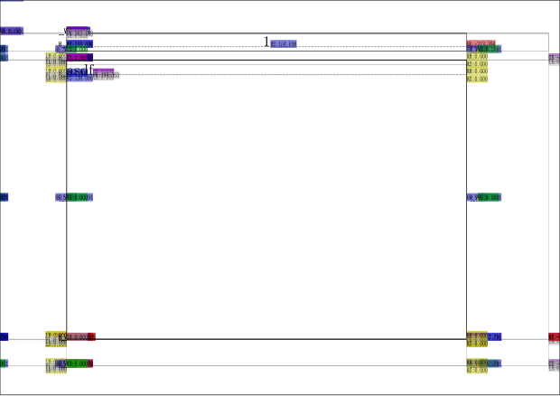

Contents
Summary
The command
\showmakeup
typesets debug typeset information
Settings
| \showmakeup[...] | |
| [...] | makeup reset boxes all hbox vbox vtop kern glue penalty fontkern strut whatsit glyph simple simplehbox simplevbox simplevtop user math italic origin discretionary expansion line space depth |
| Option | Explanation |
|---|---|
| makeup | a list shortcut for page layout visualisation |
| boxes | a shortcut for box composition |
| all | a shortcut for most of the useful options |
Description
Produces extra overlay layers with detailed information about 'invisible' items on the typeset page (skips, glues, whatsits et cetera).
Those layers can be turned on and off in Adobe Reader to improve readability.
| Bug report: some of the argument options in this list do not match up with current lmtx nor mkiv, and the argument is actually a commalist instead of a single value (See: Bug List) |
Examples
Example 1
-
\setuppapersize[A7,landscape] \showmakeup \starttext asdf \stoptext
- 